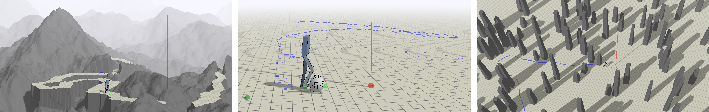

Transactions on Graphics (Proc. ACM SIGGRAPH 2017)
Xue Bin Peng(1)Glen Berseth(1)KangKang Yin(2)Michiel van de Panne(1)
(1)University of British Columbia(2)National University of Singapore

Abstract
Learning physics-based locomotion skills is a difficult problem, leading
to solutions that typically exploit prior knowledge of various forms. In
this paper we aim to learn a variety of environment-aware locomotion
skills with a limited amount of prior knowledge. We adopt a two-level
hierarchical control framework. First, low-level controllers are learned that
operate at a fine timescale and which achieve robust walking gaits that
satisfy stepping-target and style objectives. Second, high-level controllers
are then learned which plan at the timescale of steps by invoking desired
step targets for the low-level controller. The high-level controller makes
decisions directly based on high-dimensional inputs, including terrain maps
or other suitable representations of the surroundings. Both levels of the
control policy are trained using deep reinforcement learning. Results are
demonstrated on a simulated 3D biped. Low-level controllers are learned for
a variety of motion styles and demonstrate robustness with respect to forcebased
disturbances, terrain variations, and style interpolation. High-level
controllers are demonstrated that are capable of following trails through
terrains, dribbling a soccer ball towards a target location, and navigating
through static or dynamic obstacles.